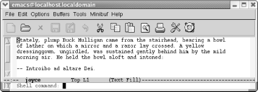
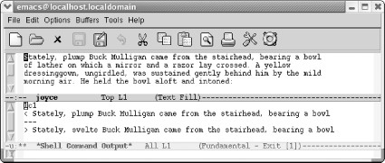
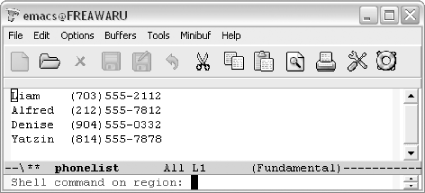
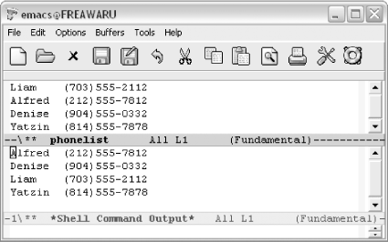
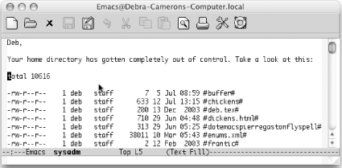
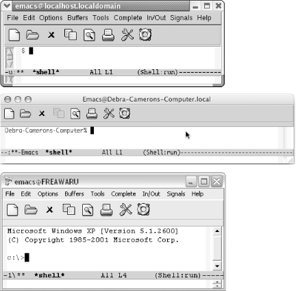
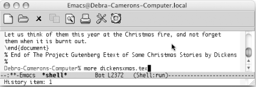
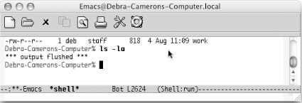

{% include JB/setup %}
{% raw %}
<div>
<div class="calibre24"></div><div class="book" xml:lang="en"><div class="book"><div class="book"><div class="book"><div class="calibre24"></div><h1 class="title"><a id="gnu3-CHP-5" class="calibre1"></a>Chapter 5. Emacs as a Work Environment</h1></div></div></div><p class="copyright">Many of the everyday things you do from a command prompt can be done
from within Emacs. You can execute commands, work with directories,
and print files—all without leaving Emacs. Changing tasks is as
simple as jumping between buffers.</p><p class="copyright">What's important about this? Of course,
it's nice to be able to move between tasks easily.
What's even more important is that you have the same
editing environment no matter what you're doing: you
can use all of the Emacs editing commands to work on a file, give
shell commands, then start up Dired, the directory editor, to do some
file maintenance. It is simple to move text from one window to
another. You can execute a command and then use Emacs commands to cut
and paste the results into a file. If you're trying
to compile a program and keep getting error messages, you can save
the interactive session as a file and confer with someone about the
problem. Despite the many advantages of modern window systems, Emacs
often provides the best way to integrate the many kinds of work you
do daily.</p><p class="copyright">Much of the information in this chapter involves integration between
Emacs and the operating system. Emacs is most commonly a Unix editor,
so forgive us for a bias in that direction. But we are happy to
report that for users of GNU Emacs on other platforms, integration
with the operating system is still available; you can use shell mode
to run commands and can edit directories with Dired.
There's no reason to leave Emacs no matter what your
platform is.</p><div class="book" xml:lang="en"><div class="book"><div class="book"><div class="book"><h1 class="title"><a id="gnu3-CHP-5-SECT-1" class="calibre1"></a>Executing Commands in Shell Buffers</h1></div></div></div><p class="copyright">One of the most important features <a id="gnu3-CHP-5-ITERM-2134" class="calibre2"></a>
            <a id="gnu3-CHP-5-ITERM-2135" class="calibre2"></a>of Emacs is its ability to run a command
shell in a buffer. Once you have started a shell buffer, you can do
all of your normal command-line work within Emacs. What does this buy
you?</p><div class="book"><ul class="itemizedlist"><li class="listitem"><p class="copyright">You don't have to leave Emacs to get a command
prompt. If you want to print or compile a file that
you're editing, you can do it immediately.</p></li><li class="listitem"><p class="copyright">You can use Emacs editing features to write your commands.</p></li><li class="listitem"><p class="copyright">You can use Emacs editing features to "back
up" through your command list, copy an old command,
modify it, and execute it again.</p></li><li class="listitem"><p class="copyright">You can save your shell buffer, keeping a transcript of your editing
session—which automatically includes the output from every
command that you ran. For debugging or remembering commands you run
infrequently, this can be invaluable.</p></li><li class="listitem"><p class="copyright">You can copy output from commands into a file or into another command.</p></li><li class="listitem"><p class="copyright">You can save complex commands in a file and insert the file at the
prompt, rather than retyping the command.</p></li></ul></div><p class="copyright">As you get used to working within Emacs, you will undoubtedly
discover more and more ways to put shell mode to use.</p><p class="copyright">In this section, we discuss shell mode. Later in this chapter, we
discuss directory editing, printing, and calendar and diary features
for doing simple time management in Emacs. Right now,
we'll start with a simple variation on shell mode, a
feature that lets you execute commands one at a time.</p><div class="book" xml:lang="en"><div class="book"><div class="book"><div class="book"><h2 class="title1"><a id="gnu3-CHP-5-SECT-1.1" class="calibre1"></a>Running One Command at a Time</h2></div></div></div><p class="copyright">To run a command while
<a id="gnu3-CHP-5-ITERM-2136" class="calibre2"></a>
               <a id="gnu3-CHP-5-ITERM-2137" class="calibre2"></a>you're
in an Emacs session, type <span><strong class="calibre5">M-!</strong></span>. Emacs
asks for the command you want to run. Type the command and press
<span><strong class="calibre5">Enter</strong></span>. Emacs then opens a window
called <code class="calibre21">*Shell Command Output*</code> where it displays
the results of your command.</p><div class="book"><a id="ch05-2-fm2xml" class="calibre2"></a><table class="calibre8"><colgroup class="calibre9"><col class="calibre10"/></colgroup><tbody class="calibre15"><tr class="calibre12"><td class="calibre17">
                           <p class="copyright">Type: <span><strong class="calibre5">M-!</strong></span>
                           </p>
                        </td></tr><tr class="calibre12"><td class="calibre17">
                           <p class="copyright">
                              </p><div class="book"><div class="mediaobject"><a id="I_5_tt135" class="calibre2"></a></div></div><p class="copyright">
                           </p>
                        </td></tr><tr class="calibre12"><td class="calibre19">
                           <p class="copyright">Emacs prompts you for a command to execute.</p>
                        </td></tr></tbody></table></div><div class="book"><a id="ch05-3-fm2xml" class="calibre2"></a><table class="calibre8"><colgroup class="calibre9"><col class="calibre10"/></colgroup><tbody class="calibre15"><tr class="calibre12"><td class="calibre17">
                           <p class="copyright">Type: <span><strong class="calibre5">diff joyce joyce2</strong></span>
                           </p>
                        </td></tr><tr class="calibre12"><td class="calibre17">
                           <p class="copyright">
                              </p><div class="book"><div class="mediaobject"><a id="I_5_tt136" class="calibre2"></a></div></div><p class="copyright">
                           </p>
                        </td></tr><tr class="calibre12"><td class="calibre19">
                           <p class="copyright">Emacs executes the <span><strong class="calibre5">diff</strong></span> command and
puts the output into a <code class="calibre21">*Shell</code>
                              <code class="calibre21">Command</code> 
                              <code class="calibre21">Output*</code> buffer.</p>
                        </td></tr></tbody></table></div><p class="copyright">Because the output from the <span><strong class="calibre5">diff</strong></span>
command is in a buffer, you can edit it, save it, or do anything else
you would like with it. Of course, if the operating system has no
<span><strong class="calibre5">diff</strong></span> command or cannot access it for
some reason, this command fails.</p><p class="copyright">An interesting twist to the shell command facility is that you can
use a region of a buffer rather than a traditional file as input to
the command. For example, let's say we want to sort
a phone list. First, we put the cursor somewhere in the list (say, on
the first character of <code class="calibre21">Liam</code>), then we give the
<span><strong class="calibre5">mark-paragraph</strong></span> command (<span><strong class="calibre5">M-h</strong></span>). This command defines the phone list as a
region, with the cursor at the beginning of the paragraph and the
mark at the end.</p><p class="copyright">In the following example, the shaded area shows the extent of the
region we want to sort. After selecting a region, we press <span><strong class="calibre5">M-|</strong></span> (for <span><strong class="calibre5">shell-command-on-region</strong></span>); Emacs prompts for
the shell command to run.</p><div class="book"><a id="ch05-4-fm2xml" class="calibre2"></a><table class="calibre8"><colgroup class="calibre9"><col class="calibre10"/></colgroup><tbody class="calibre15"><tr class="calibre12"><td class="calibre17">
                           <p class="copyright">Type: <span><strong class="calibre5">M-h M-|</strong></span>
                           </p>
                        </td></tr><tr class="calibre12"><td class="calibre17">
                           <p class="copyright">
                              </p><div class="book"><div class="mediaobject"><a id="I_5_tt137" class="calibre2"></a></div></div><p class="copyright">
                           </p>
                        </td></tr><tr class="calibre12"><td class="calibre19">
                           <p class="copyright">Emacs prompts you for a command to execute (Windows).</p>
                        </td></tr></tbody></table></div><p class="copyright">Now we give the command <span><strong class="calibre5">sort</strong></span> without
specifying any input file. Emacs is taking care of the input for us.</p><div class="book"><a id="ch05-5-fm2xml" class="calibre2"></a><table class="calibre8"><colgroup class="calibre9"><col class="calibre10"/></colgroup><tbody class="calibre15"><tr class="calibre12"><td class="calibre17">
                           <p class="copyright">Type: <span><strong class="calibre5">sort Enter</strong></span>
                           </p>
                        </td></tr><tr class="calibre12"><td class="calibre17">
                           <p class="copyright">
                              </p><div class="book"><div class="mediaobject"><a id="I_5_tt138" class="calibre2"></a></div></div><p class="copyright">
                           </p>
                        </td></tr><tr class="calibre12"><td class="calibre19">
                           <p class="copyright">Emacs runs a sort on the region (Windows).</p>
                        </td></tr></tbody></table></div><p class="copyright">Emacs has sorted the phone list (i.e., everything within the region).</p><p class="copyright">A useful variation for <span><strong class="calibre5">M-!</strong></span> puts the
output <a id="gnu3-CHP-5-ITERM-2138" class="calibre2"></a>
               <a id="gnu3-CHP-5-ITERM-2139" class="calibre2"></a>directly into the current
buffer, rather than into a <code class="calibre21">*Shell Command Output*</code>
buffer. To do so, precede the command with <span><strong class="calibre5">C-u</strong></span>: for example, <span><strong class="calibre5">C-u
M-!</strong></span> runs a shell command and puts the output in the
current buffer.</p><div class="book"><a id="ch05-6-fm2xml" class="calibre2"></a><table class="calibre8"><colgroup class="calibre9"><col class="calibre10"/></colgroup><tbody class="calibre15"><tr class="calibre12"><td class="calibre17">
                           <p class="copyright">Type: <span><strong class="calibre5">C-u M-! ls -la Enter</strong></span>
                           </p>
                        </td></tr><tr class="calibre12"><td class="calibre17">
                           <p class="copyright">
                              </p><div class="book"><div class="mediaobject"><a id="I_5_tt139" class="calibre2"></a></div></div><p class="copyright">
                           </p>
                        </td></tr><tr class="calibre12"><td class="calibre19">
                           <p class="copyright">Emacs runs <span><strong class="calibre5">ls</strong></span> and inserts the result
at your current location (Mac OS X).</p>
                        </td></tr></tbody></table></div></div><div class="book" xml:lang="en"><div class="book"><div class="book"><div class="book"><h2 class="title1"><a id="gnu3-CHP-5-SECT-1.2" class="calibre1"></a>Using Shell Mode</h2></div></div></div><p class="copyright">Now we're ready <a id="gnu3-CHP-5-ITERM-2140" class="calibre2"></a>
               <a id="gnu3-CHP-5-ITERM-2141" class="calibre2"></a>
               <a id="gnu3-CHP-5-ITERM-2142" class="calibre2"></a>to
discuss shell mode, the interactive facility for running commands. To
start a shell buffer, type <span><strong class="calibre5">M-x shell
Enter</strong></span>. This creates a buffer named
<code class="calibre21">*shell*</code>. You see the prompt for your shell within
this buffer. (This defaults to your usual shell; you can substitute
another shell to use in Emacs. See "Which
shell?" later in this chapter.)</p><div class="figure"><a id="gnu3-CHP-5-FIG-1" class="calibre2"></a><div class="figure-contents"><div class="mediaobject"><a id="I_5_tt140" class="calibre2"></a></div></div><p class="title3"><b class="calibre25">Figure 5-1. Shell buffers for Linux, Mac OS X, and Windows</b></p></div><br class="book"/><p class="copyright">For the most part, shell mode is exactly like the normal command
interface, except that you can use Emacs to edit the commands as you
type them. You can copy commands from one place to another, copy the
results into a file, save the whole shell buffer to a file, and so
on. Note in <a class="calibre2" href="ch05.html#gnu3-CHP-5-FIG-1" title="Figure 5-1. Shell buffers for Linux, Mac OS X, and Windows">Figure 5-1</a> that Emacs has added a few
items to the menu bar (Complete, In/Out, and Signals).</p><p class="copyright">A few tricks are worth knowing, though. For example, you normally
interrupt a command by typing <span><strong class="calibre5">C-c</strong></span>.
If you type <span><strong class="calibre5">C-c</strong></span> in shell mode, Emacs
thinks that the <span><strong class="calibre5">C-c</strong></span> is part of a
command meant for it, because many Emacs commands start with
<span><strong class="calibre5">C-c</strong></span>. Therefore, you have to type
<span><strong class="calibre5">C-c C-c</strong></span> to terminate the current
job. Likewise, under Unix, you type <span><strong class="calibre5">C-c
C-z</strong></span> to stop a job, instead of <span><strong class="calibre5">C-z</strong></span>, and <span><strong class="calibre5">C-c
C-d</strong></span> instead of <span><strong class="calibre5">C-d</strong></span>, and
so on. (<span><strong class="calibre5">C-c C-d</strong></span> is not strictly
necessary because Emacs understands <span><strong class="calibre5">C-d</strong></span> in context. If you're at
the end of the buffer, <span><strong class="calibre5">C-d</strong></span> means
"end of file"; if
you're anywhere else, it deletes a character.)
Alternatively, you can select options from the <span><strong class="calibre5">Signals</strong></span> menu rather than using control
characters, if desired (for example, selecting <span><strong class="calibre5">EOF</strong></span> instead of typing <span><strong class="calibre5">C-d</strong></span>).</p><p class="copyright">Shell mode also provides a few convenient shortcuts. The command
<span><strong class="calibre5">M-p</strong></span> retrieves the last shell command
you typed, no matter how far back in the buffer it is. Typing
successive <span><strong class="calibre5">M-p</strong></span>'s
brings back earlier commands.</p><div class="book"><a id="ch05-8-fm2xml" class="calibre2"></a><table class="calibre8"><colgroup class="calibre9"><col class="calibre10"/></colgroup><tbody class="calibre15"><tr class="calibre12"><td class="calibre17">
                           <p class="copyright">Type: <span><strong class="calibre5">M-p</strong></span>
                           </p>
                        </td></tr><tr class="calibre12"><td class="calibre17">
                           <p class="copyright">
                              </p><div class="book"><div class="mediaobject"><a id="I_5_tt141" class="calibre2"></a></div></div><p class="copyright">
                           </p>
                        </td></tr><tr class="calibre12"><td class="calibre19">
                           <p class="copyright">
                              <span><strong class="calibre5">M-p</strong></span> retrieves the last command, even
if it isn't on the screen (Mac OS X).</p>
                        </td></tr></tbody></table></div><p class="copyright">In this example, the previous command was <span><strong class="calibre5">more
dickensxmas.tex</strong></span>. It's no longer on the
screen; its output has pushed it off the top. <span><strong class="calibre5">M-p</strong></span> (for <span><strong class="calibre5">comint-previous-input</strong></span>) retrieves the command,
but doesn't execute it; you can edit the command
before pressing <span><strong class="calibre5">Enter</strong></span>. To find
subsequent commands, type <span><strong class="calibre5">M-n</strong></span>.</p><p class="copyright">If these commands sound <a id="gnu3-CHP-5-ITERM-2143" class="calibre2"></a>
               <a id="gnu3-CHP-5-ITERM-2144" class="calibre2"></a>familiar to you, they should. They
are history commands, which are identical to the minibuffer history
commands we discussed in <a class="calibre2" href="ch03.html" title="Chapter 3. Search and Replace">Chapter 3</a>. The
<span><strong class="calibre5">In/Out</strong></span> menu is devoted to working
with command history.</p><p class="copyright">
               <span><strong class="calibre5">Enter</strong></span> and <span><strong class="calibre5">Tab</strong></span> have special functions in shell mode.
Pressing <span><strong class="calibre5">Enter</strong></span> executes the command
on the line where the cursor is, even if you move the cursor up to
the line of an earlier command you want to execute again. When you
press <span><strong class="calibre5">Enter</strong></span>, Emacs copies the
command to the end of the buffer and executes it. Of course, you can
modify the command before pressing <span><strong class="calibre5">Enter</strong></span>.</p><p class="copyright">Pressing <span><strong class="calibre5">Tab</strong></span> puts the Emacs
completion feature into action; use completion for operating system
commands, filenames, and variables. Note that the completion of
system commands works best on Unix implementations like Linux and Mac
OS X; Emacs doesn't seem to find all the possible
Windows commands, for example.</p><p class="copyright">If you type a command that produces a lot of output, cluttering up
your session, there's an easy way to get rid of it.
Type <span><strong class="calibre5">C-c C-o</strong></span> (for <span><strong class="calibre5">comint-kill-output</strong></span>).</p><div class="book"><a id="ch05-9-fm2xml" class="calibre2"></a><table class="calibre8"><colgroup class="calibre9"><col class="calibre10"/></colgroup><tbody class="calibre15"><tr class="calibre12"><td class="calibre17">
                           <p class="copyright">Type: <span><strong class="calibre5">C-c C-o</strong></span>
                           </p>
                        </td></tr><tr class="calibre12"><td class="calibre17">
                           <p class="copyright">
                              </p><div class="book"><div class="mediaobject"><a id="I_5_tt142" class="calibre2"></a></div></div><p class="copyright">
                           </p>
                        </td></tr><tr class="calibre12"><td class="calibre19">
                           <p class="copyright">
                              <span><strong class="calibre5">C-c C-o</strong></span> automatically deletes the
output from the last command (Mac OS X).</p>
                        </td></tr></tbody></table></div><p class="copyright">The previous command (<span><strong class="calibre5">ls-la</strong></span>) remains
on the screen, but its output, a long list of files, is deleted.
<span><strong class="calibre5">C-c C-o</strong></span> can delete output from only
the most recent command; it can't delete output from
your previous commands.</p><p class="copyright">Another useful command for shell mode is <span><strong class="calibre5">C-c
C-r</strong></span> (for <span><strong class="calibre5">comint-show-output</strong></span>). This command is useful if
a command produces a lot of output and causes the first few lines of
output to scroll off the screen. <span><strong class="calibre5">C-c
C-r</strong></span> repositions the window so the first line of output
from your last command is at the top of the window. If you want to
see the end of the output instead, type <span><strong class="calibre5">C-c
C-e</strong></span> (for <span><strong class="calibre5">comint-show-maximum-output</strong></span>); this command
moves the last line of the input to the bottom of the window.</p><p class="copyright">When you're writing a book, moving by paragraphs
makes sense, but when you're using a shell, moving
<a id="gnu3-CHP-5-ITERM-2145" class="calibre2"></a>
               <a id="gnu3-CHP-5-ITERM-2146" class="calibre2"></a>by
output group is more helpful. An <span><em class="calibre7">output group</em></span>
consists of a command and its output. To move to the previous output
group, type <span><strong class="calibre5">C-c C-p</strong></span>. To move to the
next output group, type <span><strong class="calibre5">C-c C-n</strong></span>.</p><p class="copyright">An advantage of shell mode is that you can start a command and then
edit another buffer while the command runs. The shell buffer
doesn't need to be onscreen; just type <span><strong class="calibre5">M-x shell</strong></span> to get the buffer back again.</p><p class="copyright">You can have multiple shell buffers running <a id="gnu3-CHP-5-ITERM-2147" class="calibre2"></a>at once;
just use the command <span><strong class="calibre5">M-x
rename-uniquely</strong></span> to rename your shell buffer. You can start
another shell buffer, and another, and another—as many as you
need to juggle all your tasks.</p><div class="book" xml:lang="en"><div class="book"><div class="book"><div class="book"><h3 class="title4"><a id="gnu3-CHP-5-SECT-1.2.1" class="calibre1"></a>Which shell?</h3></div></div></div><p class="copyright">Normally, Emacs uses your default shell in shell mode. Under Windows
that's <span><em class="calibre7">cmd.exe</em></span> (the familiar
<span><strong class="calibre5">C:\&gt;</strong></span> prompt or a close
relative).<sup class="calibre6">[<a id="gnu3-CHP-5-FNOTE-1" href="#ftn.gnu3-CHP-5-FNOTE-1" class="calibre2">1</a>]</sup> But Unix has a wide variety of available shells,
including the GNU Project's <span><strong class="calibre5">bash</strong></span> and the zed shell, <span><strong class="calibre5">zsh</strong></span>. Whatever shell you normally use,
that's what Emacs starts when you enter shell mode.</p><p class="copyright">How does Emacs know which shell to start? First, it looks at the
variable <span><strong class="calibre5">shell-file-name</strong></span>. Then it
looks for a Unix environment variable named <span><strong class="calibre5">ESHELL</strong></span>. Finally it looks for an environment
variable named <span><strong class="calibre5">SHELL</strong></span>. If you want to
run another particular shell (for example, the zed shell) when
you're in Emacs, you can add the following command
to your <span><em class="calibre7">.emacs</em></span> file:</p><a id="I_5_tt143" class="calibre2"></a><pre class="programlisting">(setq shell-file-name "/bin/zsh")</pre><p class="copyright">When Emacs starts an interactive shell, it runs an additional
initialization file after your shell's normal
startup files. The name of this file is
<span><em class="calibre7">.emacs_shell-name</em></span>, where
<span><em class="calibre7">shell-name</em></span> is the name of the shell you want to
use in Emacs. It must be located in your home directory. For example,
if you use the C shell, you can add Emacs-only startup commands by
placing them in the file <span><em class="calibre7">.emacs_csh</em></span>.
Let's say that when you're in
Emacs, you want to change the prompt to <span><strong class="calibre5">emacs:%</strong></span> and you want an environment variable
called <span><strong class="calibre5">WITHIN_EDITOR</strong></span> to be set to
<span><strong class="calibre5">T</strong></span>. Here's the
contents of your <span><em class="calibre7">.emacs_csh</em></span> file:</p><a id="I_5_tt144" class="calibre2"></a><pre class="programlisting">set prompt="emacs:% "
setenv WITHIN_EDITOR T</pre><p class="copyright">Within a shell buffer, Emacs also sets the environment variable
<span><strong class="calibre5">EMACS</strong></span> to <span><strong class="calibre5">t</strong></span>, and sets your terminal type (the <span><strong class="calibre5">TERM</strong></span> variable) to <span><strong class="calibre5">emacs</strong></span>.</p></div><div class="book" xml:lang="en"><div class="book"><div class="book"><div class="book"><h3 class="title4"><a id="gnu3-CHP-5-SECT-1.2.2" class="calibre1"></a>Making passwords invisible in shell mode</h3></div></div></div><p class="copyright">
                  <a id="gnu3-CHP-5-ITERM-2148" class="calibre2"></a>
                  <a id="gnu3-CHP-5-ITERM-2149" class="calibre2"></a>By
default, shell mode displays everything you type and that includes
passwords—not a good situation if someone is peering over your
shoulder. There is a way around this problem, however. Before you
type the password, type <span><strong class="calibre5">M-x
send-invisible</strong></span>. Emacs asks for the nonechoed text. When
you type a character, Emacs puts an asterisk in the minibuffer. Press
<span><strong class="calibre5">Enter</strong></span> and Emacs enters the password
without displaying it. To have Emacs hide passwords as you type them,
add the following two lines to your <span><em class="calibre7">.emacs</em></span> file:</p><a id="I_5_tt145" class="calibre2"></a><pre class="programlisting">(add-hook 'comint-output-filter-functions
   'comint-watch-for-password-prompt)</pre><p class="copyright">Emacs asks for nonechoed text in the minibuffer whenever a password
prompt appears on the screen, making sure that the password is never
displayed. <a class="calibre2" href="ch05.html#gnu3-CHP-5-TABLE-1" title="Table 5-1. Shell mode commands">Table 5-1</a> summarizes shell mode
commands. <a id="gnu3-CHP-5-ITERM-2150" class="calibre2"></a>
               </p><div class="book"><a id="gnu3-CHP-5-TABLE-1" class="calibre2"></a><p class="title2"><b class="calibre25">Table 5-1. Shell mode commands</b></p><div class="table-contents"><a id="gnu3-CHP-5-ITERM-2151" class="calibre2"></a><a id="gnu3-CHP-5-ITERM-2152" class="calibre2"></a><table summary="Shell mode commands" class="calibre8"><colgroup class="calibre9"><col class="calibre10"/><col class="calibre10"/><col class="calibre10"/></colgroup><thead class="calibre11"><tr class="calibre12"><th class="calibre26">
                              <p class="copyright">
                                 <span><strong class="calibre5">Keystrokes</strong></span>
                              </p>
                           </th><th class="calibre26">
                              <p class="copyright">
                                 <span><strong class="calibre5">Command name</strong></span>
                              </p>
                           </th><th class="calibre27">
                              <p class="copyright">
                                 <span><strong class="calibre5">Action</strong></span>
                              </p>
                           </th></tr></thead><tbody class="calibre15"><tr class="calibre12"><td class="calibre28">
                              <p class="copyright">(<span><em class="calibre7">none</em></span>)</p>
                           </td><td class="calibre28">
                              <p class="copyright">
                                 <span><strong class="calibre5">shell</strong></span>
                              </p>
                           </td><td class="calibre29">
                              <p class="copyright">Enter shell mode.</p>
                           </td></tr><tr class="calibre12"><td class="calibre28">
                              <p class="copyright">
                                 <span><strong class="calibre5">C-c C-c</strong></span>
                                 <span><em class="calibre7">Signals</em></span>
                                 <span>→</span> 
                                 <span><em class="calibre7">BREAK</em></span>
                              </p>
                           </td><td class="calibre28">
                              <p class="copyright">
                                 <span><strong class="calibre5">comint-interrupt-subjob</strong></span>
                              </p>
                           </td><td class="calibre29">
                              <p class="copyright">Interrupt current job; equivalent to <span><strong class="calibre5">C-c</strong></span>.</p>
                           </td></tr><tr class="calibre12"><td class="calibre28">
                              <p class="copyright">
                                 <span><strong class="calibre5">C-d</strong></span>
                              </p>
                           </td><td class="calibre28">
                              <p class="copyright">
                                 <span><strong class="calibre5">comint-delchar-or-maybe-eof</strong></span>
                              </p>
                           </td><td class="calibre29">
                              <p class="copyright">Send EOF character if at end of buffer; delete a character elsewhere.</p>
                           </td></tr><tr class="calibre12"><td class="calibre28">
                              <p class="copyright">
                                 <span><strong class="calibre5">C-c C-d</strong></span>
                                 <span><em class="calibre7">Signals</em></span>
                                 <span>→</span> 
                                 <span><em class="calibre7">EOF</em></span>
                              </p>
                           </td><td class="calibre28">
                              <p class="copyright">
                                 <span><strong class="calibre5">comint-send-eof</strong></span>
                              </p>
                           </td><td class="calibre29">
                              <p class="copyright">Send EOF character.</p>
                           </td></tr><tr class="calibre12"><td class="calibre28">
                              <p class="copyright">
                                 <span><strong class="calibre5">C-c C-u</strong></span>
                              </p>
                           </td><td class="calibre28">
                              <p class="copyright">
                                 <span><strong class="calibre5">comint-kill-input</strong></span>
                              </p>
                           </td><td class="calibre29">
                              <p class="copyright">Erase current line; equivalent to <span><strong class="calibre5">C-u</strong></span> in Unix shells.</p>
                           </td></tr><tr class="calibre12"><td class="calibre28">
                              <p class="copyright">
                                 <span><strong class="calibre5">C-c C-z</strong></span>
                                 <span><em class="calibre7">Signals</em></span>
                                 <span>→</span> 
                                 <span><em class="calibre7">STOP</em></span>
                              </p>
                           </td><td class="calibre28">
                              <p class="copyright">
                                 <span><strong class="calibre5">comint-stop-subjob</strong></span>
                              </p>
                           </td><td class="calibre29">
                              <p class="copyright">Suspend or stop a job; <span><strong class="calibre5">C-z</strong></span> in Unix
shells.</p>
                           </td></tr><tr class="calibre12"><td class="calibre28">
                              <p class="copyright">
                                 <span><strong class="calibre5">M-p</strong></span>
                                 <span><em class="calibre7">In/Out</em></span>
                                 <span>→</span> 
                                 <span><em class="calibre7">Previous Input</em></span>
                              </p>
                           </td><td class="calibre28">
                              <p class="copyright">
                                 <span><strong class="calibre5">comint-previous-input</strong></span>
                              </p>
                           </td><td class="calibre29">
                              <p class="copyright">Retrieve previous commands (can be repeated to find earlier
commands).</p>
                           </td></tr><tr class="calibre12"><td class="calibre28">
                              <p class="copyright">
                                 <span><strong class="calibre5">M-n</strong></span>
                                 <span><em class="calibre7">In/Out</em></span>
                                 <span>→</span> 
                                 <span><em class="calibre7">Next Input</em></span>
                              </p>
                           </td><td class="calibre28">
                              <p class="copyright">
                                 <span><strong class="calibre5">comint-next-input</strong></span>
                              </p>
                           </td><td class="calibre29">
                              <p class="copyright">Retrieve subsequent commands (can be repeated to find more recent
commands).</p>
                           </td></tr><tr class="calibre12"><td class="calibre28">
                              <p class="copyright">
                                 <span><strong class="calibre5">Enter</strong></span>
                              </p>
                           </td><td class="calibre28">
                              <p class="copyright">
                                 <span><strong class="calibre5">comint-send-input</strong></span>
                              </p>
                           </td><td class="calibre29">
                              <p class="copyright">Send input on current line.</p>
                           </td></tr><tr class="calibre12"><td class="calibre28">
                              <p class="copyright">
                                 <span><strong class="calibre5">Tab</strong></span>
                              </p>
                           </td><td class="calibre28">
                              <p class="copyright">
                                 <span><strong class="calibre5">comint-dynamic-complete</strong></span>
                              </p>
                           </td><td class="calibre29">
                              <p class="copyright">Complete current command, filename, or variable name.</p>
                           </td></tr><tr class="calibre12"><td class="calibre28">
                              <p class="copyright">
                                 <span><strong class="calibre5">C-c C-o</strong></span>
                                 <span><em class="calibre7">In/Out</em></span>
                                 <span>→</span> 
                                 <span><em class="calibre7">Delete Current Output
Group</em></span>
                              </p>
                           </td><td class="calibre28">
                              <p class="copyright">
                                 <span><strong class="calibre5">comint-kill-output</strong></span>
                              </p>
                           </td><td class="calibre29">
                              <p class="copyright">Delete output from last command.</p>
                           </td></tr><tr class="calibre12"><td class="calibre28">
                              <p class="copyright">
                                 <span><strong class="calibre5">C-c C-r</strong></span>
                              </p>
                           </td><td class="calibre28">
                              <p class="copyright">
                                 <span><strong class="calibre5">comint-show-output</strong></span>
                              </p>
                           </td><td class="calibre29">
                              <p class="copyright">Move first line of output to top of window.</p>
                           </td></tr><tr class="calibre12"><td class="calibre28">
                              <p class="copyright">
                                 <span><strong class="calibre5">C-c C-e</strong></span>
                                 <span><em class="calibre7">In/Out</em></span>
                                 <span>→</span> 
                                 <span><em class="calibre7">Show Maximum Output</em></span>
                              </p>
                           </td><td class="calibre28">
                              <p class="copyright">
                                 <span><strong class="calibre5">comint-show-maximum-output</strong></span>
                              </p>
                           </td><td class="calibre29">
                              <p class="copyright">Move last line of output to bottom of window.</p>
                           </td></tr><tr class="calibre12"><td class="calibre28">
                              <p class="copyright">
                                 <span><strong class="calibre5">C-c C-p</strong></span>
                                 <span><em class="calibre7">In/Out</em></span>
                                 <span>→</span> 
                                 <span><em class="calibre7">Backward Output Group</em></span>
                              </p>
                           </td><td class="calibre28">
                              <p class="copyright">
                                 <span><strong class="calibre5">comint-previous-prompt</strong></span>
                              </p>
                           </td><td class="calibre29">
                              <p class="copyright">Move to previous command.</p>
                           </td></tr><tr class="calibre12"><td class="calibre30">
                              <p class="copyright">
                                 <span><strong class="calibre5">C-c C-n</strong></span>
                                 <span><em class="calibre7">In/Out</em></span>
                                 <span>→</span> 
                                 <span><em class="calibre7">Forward Output Group</em></span>
                              </p>
                           </td><td class="calibre30">
                              <p class="copyright">
                                 <span><strong class="calibre5">comint-next-prompt</strong></span>
                              </p>
                           </td><td class="calibre31">
                              <p class="copyright">Move to next command.</p>
                           </td></tr></tbody></table></div></div><br class="book"/></div></div></div><div class="book"><br class="book"/><hr class="calibre4"/><div class="book"><p class="copyright"><sup class="calibre6">[<a id="ftn.gnu3-CHP-5-FNOTE-1" href="#gnu3-CHP-5-FNOTE-1" class="calibre2">1</a>] </sup>You do have choices under Windows as well,
thanks to Cygwin (<a class="calibre2" href="http://cygwin.com/">http://cygwin.com/</a>). For example, if you
wanted to run Cygwin's bash, you'll
find helpful information on how to set that up on Ngai Kim
Hoong's page on that topic at <a class="calibre2" href="http://www.khngai.com/emacs/cygwin.php">http://www.khngai.com/emacs/cygwin.php</a>.</p></div></div></div></div>

{% endraw %}

